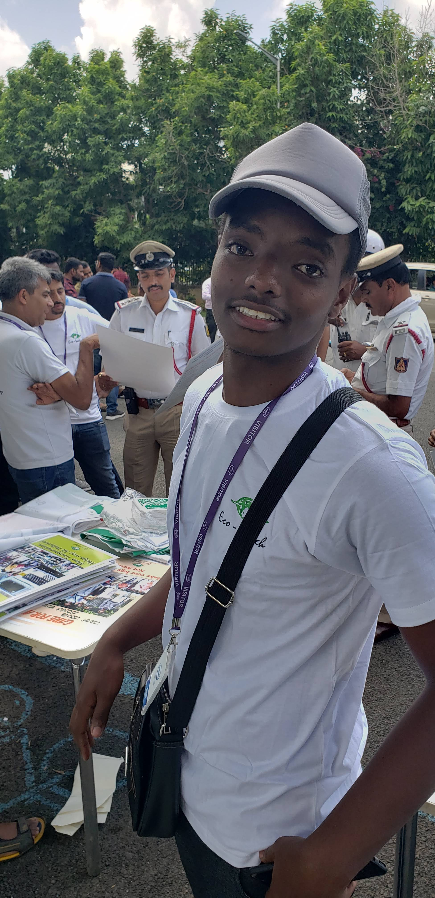
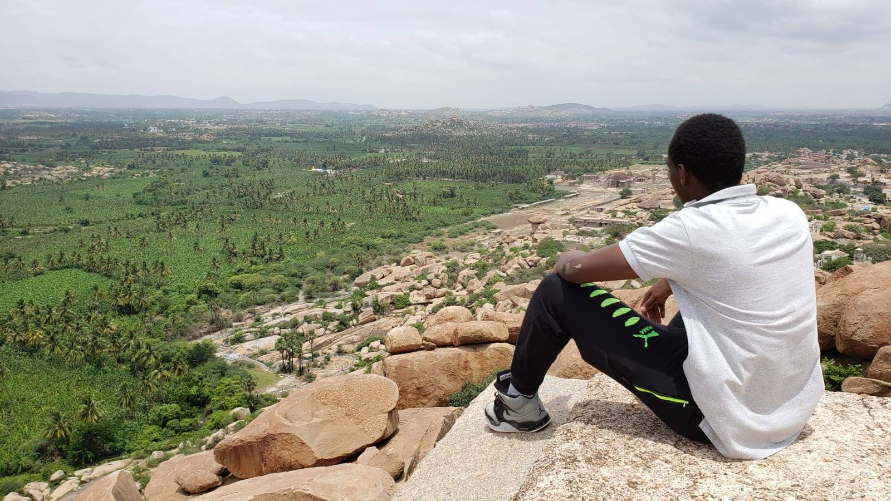
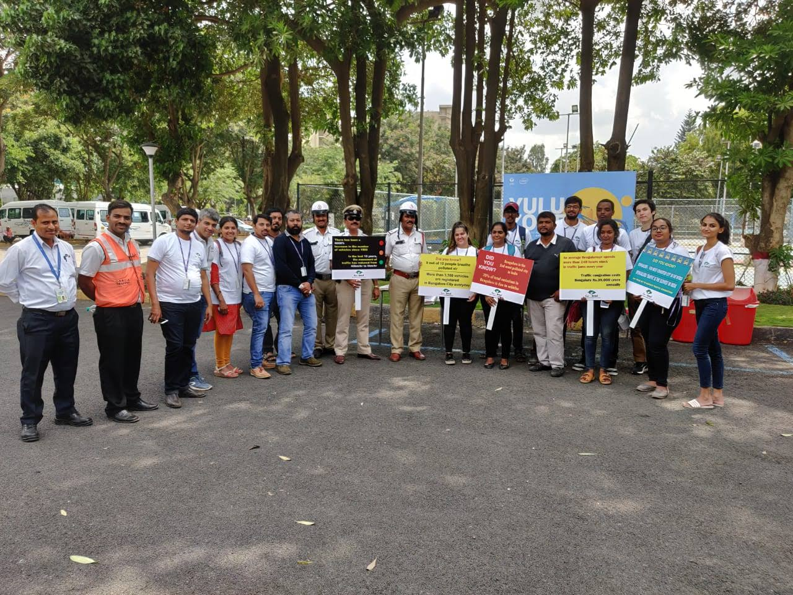
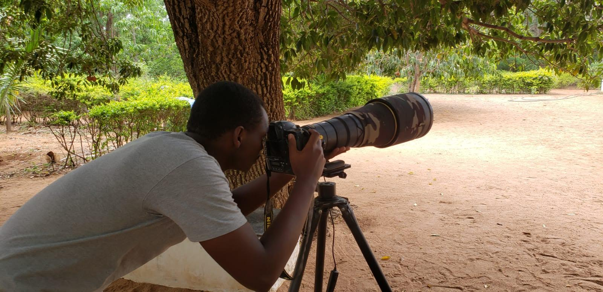

Short Bio
Jean Damascene Uwingeneye, 21 is a computer science student, with interest in reseach, design, technology and wildlife conservation. His main focus in research is to harness to use of data to gain alternative perspective of the real world and develop relevant technologies. With has more than 12 months of working experience in data collection and analysis.Education Background
2018 - Current; African Leadership University
Leadership Core coursework- Data and Decisions
- Projects
- Entrepreneurial Leadership
- Communicating for Impact
- Python
- Java
- Data Structures and Algorithms
- Databases
- Web Development
- Mobile Development
- Artificial Intelligence
- Cloud Computing
- Technology and Society
- Human Computer interaction
- Systems Programming
- Software Engeering
- Computer Architecture
- Foundational Mathematics For Computing
- Discreete Mathematics
- Wildlife policy
- Conservation Today in Africa
- Wildlife Economy and Conservation Finance
2015-2017; Lycee de Kigali (LDK)
Took a combination in
- Mathematics
- Physics
- Computer Science
- Entrepreneurship
Work Experience
2018 May - July EcoWatch India
Analysed data and helped to develop different environmental assessment reports fot the non-profit, and organised the environmental awareness campaigns
2019 March-May; Business Of Conservation Conference
Managed the conference guests databases. Built dashboard to analyse the database
2019 May-September; African Leadership University School Of Wildlife Conservation(ALUSOW)
Collected and analysed wildlife economy data from fifteen African countries, reviwed completed sections and provided feedback to the team.
Skills
- Programming(Python, Java, PHP, HTML ...)
- Research
- Data Analysis
- UX/UI Design
Achievements
Winner of AR/VR Africa Hackathon
I and my team won the AR/VR nationals. The AR/VR Africa Hackathon is an African competition and opportunity to create with, and learn about Virtual and Augmented Reality.
2018 ALUSOWC Scholar
Selected among Twent five African Leadership University Shool of wildlife conservation Scholars of 2018 cohort
Hobbies
- Always exploring new topics
- Swimming
- Midrange Hicking
- Casual photography
Highlights
   